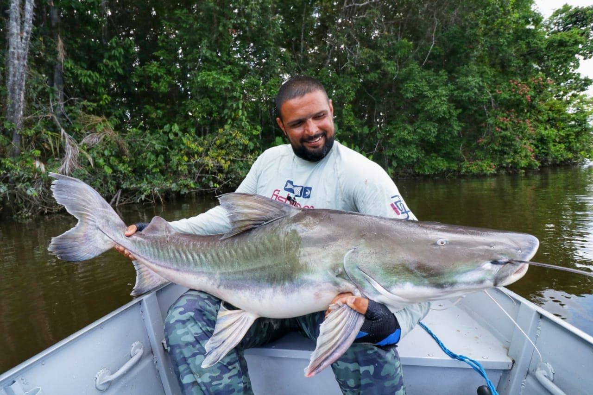
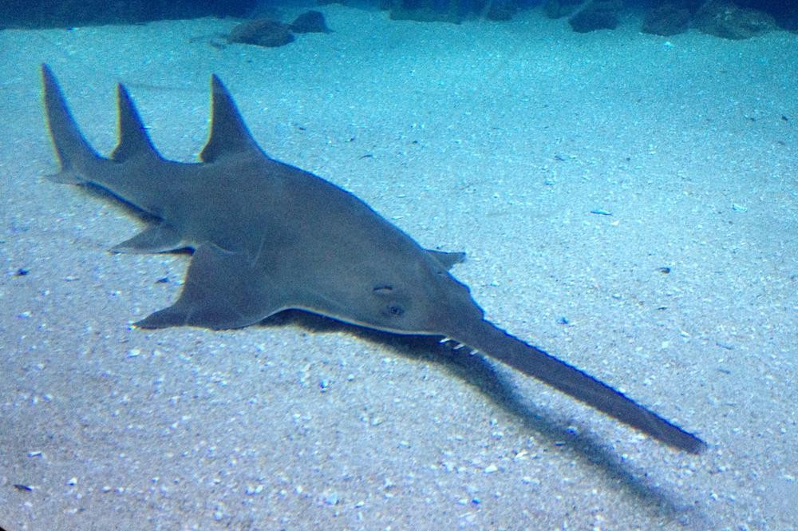
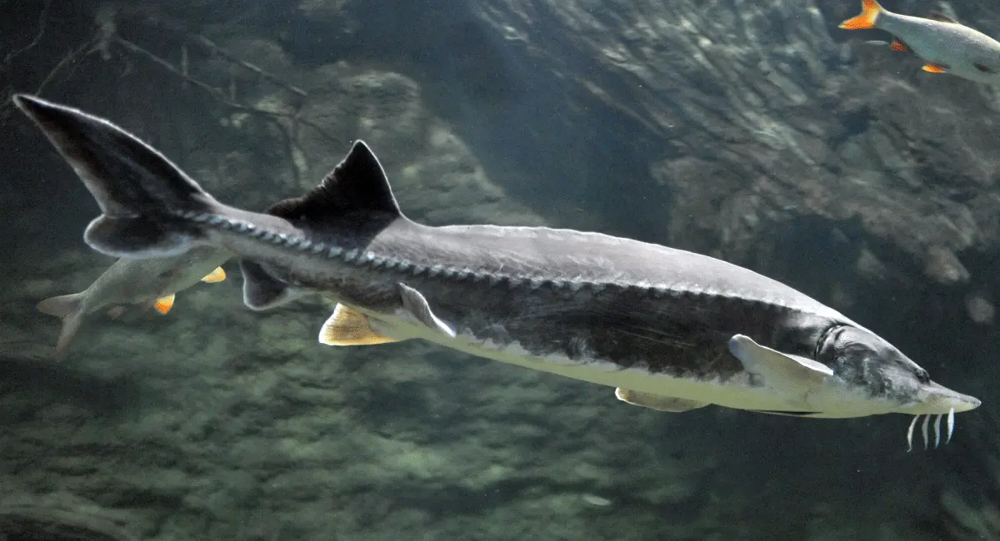
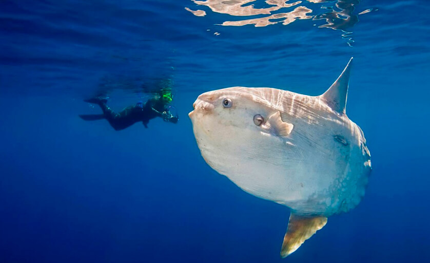
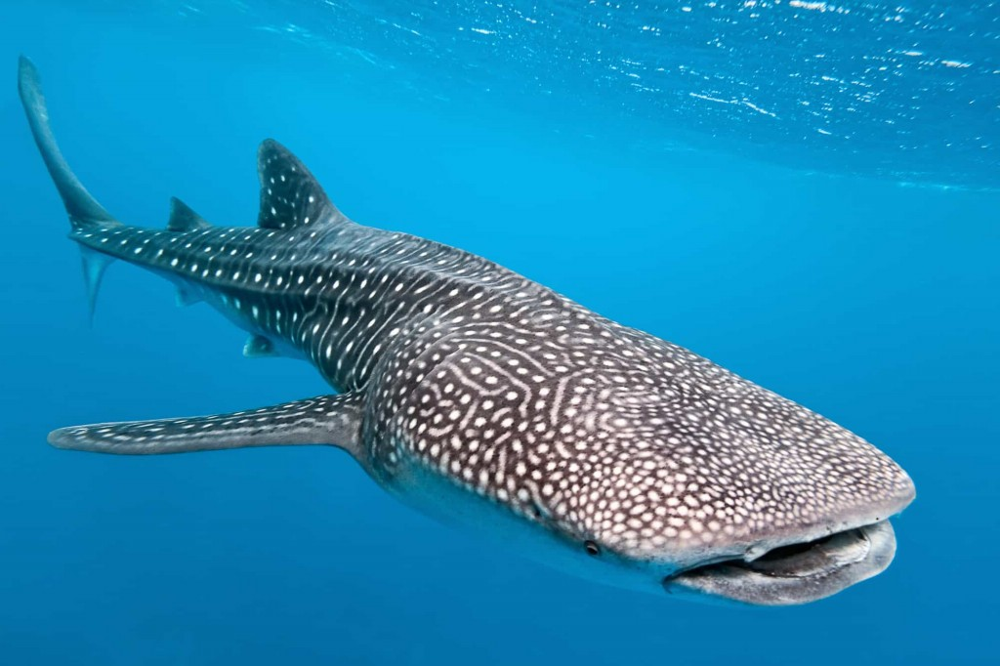

Considerado o maior bagre da América do Sul, pode ultrapassar 3,5 metros e pesar mais de 200 kg.

Reconhecível por seu rostro serrilhado, pode chegar a 7 metros de comprimento.

Um gigante que habita mares como o Cáspio e Negro, conhecido pelo seu tamanho colossal.

Conhecido por seu corpo achatado, pode ultrapassar 3 metros de comprimento e pesar mais de 2 toneladas.

O maior peixe do mundo, podendo atingir mais de 12 metros e pesar 20 toneladas.